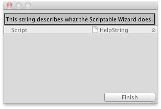

ScriptableWizard.helpString
public string helpString;
Description 描述
Allows you to set the help text of the wizard.
See Also: ScriptableWizard.OnWizardUpdate

Help string on a ScriptableWizard window.
// Creates a simple Wizard window and prints the HelpString // in the Wizard window.
using UnityEngine; using UnityEditor;
public class HelpString : ScriptableWizard { [MenuItem("Example/Show Help String")] static void CreateWindow() { ScriptableWizard.DisplayWizard("", typeof(HelpString), "Finish"); }
void OnWizardUpdate() { helpString = "This string describes what the Scriptable Wizard does."; } }